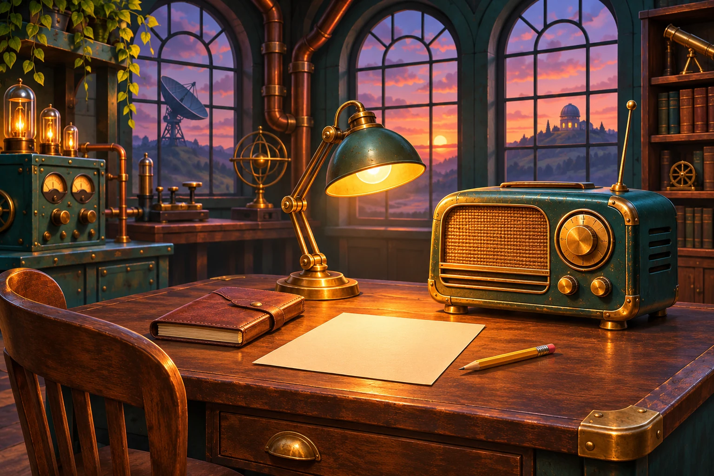

045 минут
ЧЕТЫРЕ КАДРА ИЗ ЛАБОРАТОРИИ
Восстанови историю
Рассмотри картинки. Впиши пропущенные глаголы. Используй каждое слово из банка один раз. Затем проверь историю.
ENGLISH QUEST ДОМАШНЯЯ МИССИЯ
МИССИЯ 04 / MOVERS
Собери вопросы. Восстанови историю лаборатории. Расскажи её своим голосом.
К заданиям
Дело 04 Сначала вопрос — потом история
Готово: 0 из 5 частей
НАСТРОЙ СВОЙ ГОЛОС
Включи запись. Повторяй слова и короткие ответы вслух в паузах. Запись можно послушать ещё раз.
Запись не загрузилась.
Отметка станет доступна, когда запись закончится.
СНАЧАЛА — ПОРЯДОК СЛОВ
Нажимай на карточки в нужном порядке. Начинай каждый вопрос с Did. В каждом наборе есть одно лишнее слово. Чтобы убрать карточку из вопроса, нажми на неё ещё раз.
ТЕПЕРЬ ГЛАГОЛ ВПИСЫВАЕШЬ ТЫ
Прочитай предложение. Собери вопрос из карточек, поставив карточку «_____» на место глагола. Самостоятельно впиши глагол из банка. Начинай вопрос с Did.
Банк глаголов · используй три слова, два останутся лишними
ЧЕТЫРЕ КАДРА ИЗ ЛАБОРАТОРИИ
Рассмотри картинки. Впиши пропущенные глаголы. Используй каждое слово из банка один раз. Затем проверь историю.
ТВОЯ ОЧЕРЕДЬ ГОВОРИТЬ
Запись-образец откроется после твоей попытки: собери и проверь вопросы в заданиях 2 и 3, впиши глаголы и проверь историю в задании 4. Для открытия записи не обязательно ответить без ошибок.
Послушай запись. Повтори вопросы и предложения в паузах. Затем расскажи историю самостоятельно.
Запись не загрузилась.
Произнеси три вопроса из задания 3. Затем открой картинки без подписей и расскажи историю. Используй First, Then, Next, Finally.
Сначала дослушай образец. Затем говори самостоятельно и отмечай выполненные части.
Чтобы показать работу учителю, открой «Моя работа» и сохрани PDF. Устный рассказ проверит учитель.